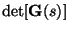

|
You are here : Control System Design - Index | Book Contents | Appendix B | Section B.5 B. Smith-McMillan FormsB.5 Poles and ZerosThe Smith-McMillan form can be utilized to give an unequivocal definition of poles and zeros in the multivariable case. In particular, we have: Definition B.11 Consider a matrix transfer function, G(s), then
In the case of square plants (same number of inputs as outputs), it follows that  is a simple function of pz(s) and pp(s). Specifically, we have
Note, however, that pz(s) and pp(s) are not necessarily coprime. Hence the scalar rational function is not sufficient to determine all zeros and poles of G(s). However, the relative degree of is equal to the difference between the number of poles and zeros of the MIMO transfer function matrix. |